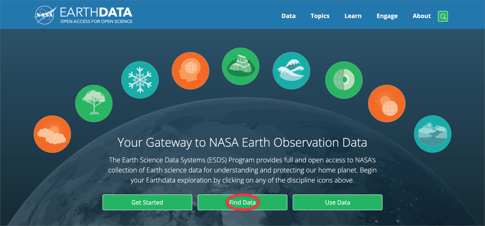
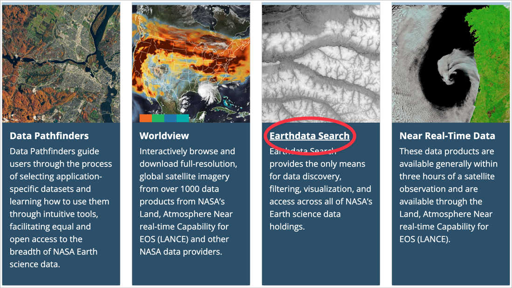
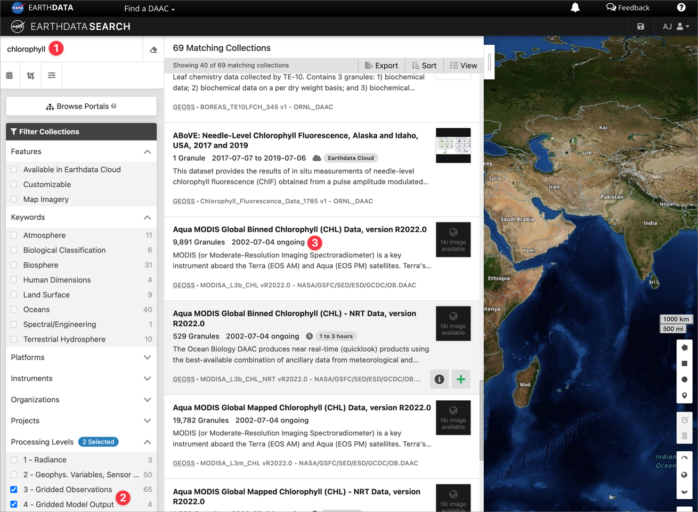

wget download from NASA Earthdata
Navigate to NASA’s EARTHDATA and follow the Find Data link:

If you have not already registered, select Register.
Scroll down a bit on the page you landed on when you selected Find Data, and select the Earthdata Search link:

On the search page, enter a keyword for the data product you are interested in downloading (① — I searched for ‘chlorophyll’), select the processing levels of interest (②), and scroll down to the data product you want (③ – here I select “Aqua MODIS Global Mapped Chlorophyll (CHL) Data, version R2022.0”):

Selecting Option ③ in Figure 3 takes you to Figure 4. Here you will notice one file for each day in the observational period; as you can see, there are 19,782 ‘granules’ (as per 15 June 2023). There is an option to download each day using the
Reuse
Citation
@online{smit,
author = {Smit, AJ and Smit, AJ},
title = {Wget Download from {NASA} {Earthdata}},
url = {https://tangledbank.netlify.app/vignettes/download_earthdata.html},
langid = {en}
}